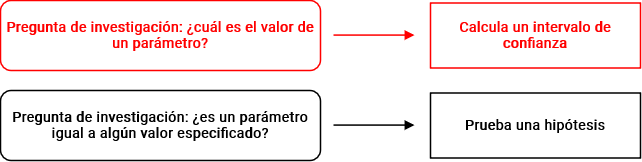
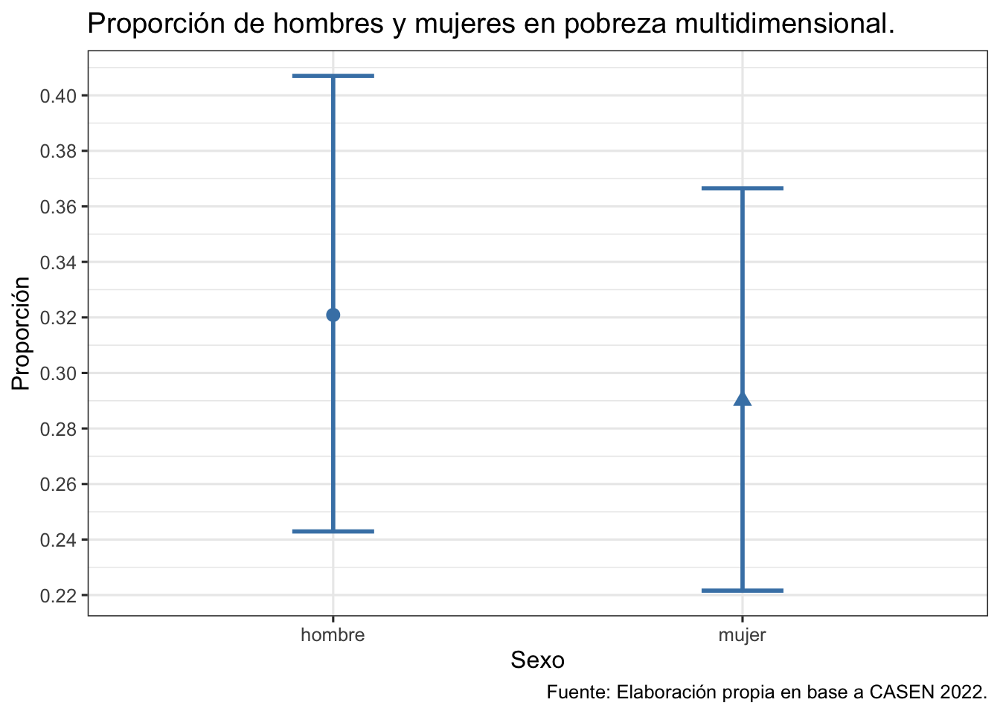

pacman::p_load(tidyverse, # Manipulacion datos
confintr, # IC
gginference, # Visualizacion
rempsyc, # Bivariados
effectsize, # Reporte
easystats) # Varios
options(scipen = 999) # para desactivar notacion cientifica
rm(list = ls()) # para limpiar el entorno de trabajoInferencia 4: Pruebas de hipótesis II
Completar hasta as 11:59 PM del viernes, 27 de octubre de 2023
Objetivo de la práctica
El objetivo de esta guía práctica es profundizar en la inferencia estadóstica, particularmente en el contraste de hipótesis de diferencias entre dos grupos.
En detalle, aprenderemos:
- Cómo los intervalos de confianza permiten “probar hipótesis”.
- Aplicar pruebas de hipótesis direccionales.
- Aplicar inferencia estadística a proporciones.
- Emplear la correlación en contexto de inferencia.
Recursos de la práctica
En esta práctica trabajaremos con un subconjunto de datos previamente procesados de la Encuesta de Caracterización Socioeconómica (CASEN) del año 2022, elaborada por el Ministerio de Desarrollo Social y Familia. Para este ejercicio, obtendremos directamente esta base desde internet. No obstante, también tienes la opción de acceder a la misma información a través del siguiente enlace: CASEN 20222. Desde allí, podrás descargar el archivo que contiene el subconjunto procesado de la base de datos CASEN 2022.
Preparación datos
Comencemos por preparar nuestros datos. Iniciamos cargando las librerías necesarias.
Cargamos los datos directamente desde internet.
load(url("https://github.com/cursos-metodos-facso/datos-ejemplos/raw/main/proc_casen.RData")) #Cargar base de datosA continuación, exploramos la base de datos proc_casen.
names(proc_casen) # Nombre de columnas [1] "id_vivienda" "folio" "id_persona" "hogar"
[5] "nucleo" "varunit" "varstrat" "expr"
[9] "edad" "sexo" "educ" "activ"
[13] "y1" "ytrabajocor" "pobreza_multi_5d" "o15"
[17] "fdt" "ocupado" "desocupado" "inact"
[21] "hijo" "n_educ" "universitaria" "tipo_ocup" dim(proc_casen) # Dimensiones[1] 202111 24Contamos con 24 variables (columnas) y 202.111 observaciones (filas).
Intervalos de confianza como “pruebas” de hipótesis
Recordemos que, en el contexto de la inferencia, un intervalo de confianza es un rango de valores plausibles que pueden contener el verdadero parámetro poblacional, con un determinado nivel de confianza.
En ese sentido, estimar un intervalo de confianza responde a cierta pregunta de investigación:

Sin embargo, los intervalos de confianza también pueden ser útiles para determinar si existen diferencias estadísticamente significativas entre dos grupos. ¿Cómo?:
Si no hay superposición de intervalos, hay diferencias poblacionales entre los grupos que estamos comparando.
Veamos dos ejemplos con nuestros datos.
a) Intervalos de confianza para la media
Obtengamos el promedio y un intervalo de confianza para los ingresos del trabajo para hombres y mujeres ocupadas en Chile en el 2022.
ocupados <- proc_casen %>%
filter(ocupado == 1) # subset de datos solo con personas ocupadas
ocupados_h <- ci_mean(ocupados$ytrabajocor[ocupados$sexo == 1]) # IC para hombres
ocupados_m <- ci_mean(ocupados$ytrabajocor[ocupados$sexo == 2]) # IC para mujeresVeamos los resultados.
ocupados_h; ocupados_m
##
## Two-sided 95% t confidence interval for the population mean
##
## Sample estimate: 768421.8
## Confidence interval:
## 2.5% 97.5%
## 759942.5 776901.0
##
## Two-sided 95% t confidence interval for the population mean
##
## Sample estimate: 606662.1
## Confidence interval:
## 2.5% 97.5%
## 599886.6 613437.5Ahora, grafiquemos ambas estimaciones para visualizar de mejor manera sus rangos de valores posibles.
g1 <- data.frame(sexo = c("hombre", "mujer"),
media = c(ocupados_h$estimate, ocupados_m$estimate),
l_inf = c(ocupados_h$interval[1], ocupados_m$interval[1]),
l_sup = c(ocupados_h$interval[2], ocupados_m$interval[2])) # creamos un dataframe
ggplot(data = g1,
mapping = aes(x = sexo, y = media)) +
geom_point(mapping = aes(shape=sexo),
color = "darkred",
size = 3,
show.legend = F) +
geom_errorbar(mapping = aes(ymin = l_inf, ymax= l_sup),
width=0.2,
size=1,
color="darkred") +
scale_y_continuous(n.breaks = 8) +
labs(title = "Promedio de ingresos del trabajo según sexo.",
y = "Ingresos",
x = "Sexo",
caption = "Fuente: Elaboración propia en base a CASEN 2022.") +
theme_bw(base_size = 12) # graficamos
Vemos que, en este caso, los intervalos no se solapan. De esta manera, podemos sostener que con un 95% de confianza, existen diferencias poblacionales en el promedio de ingresos del trabajo entre hombres y mujeres en Chile en el 2022.
b) Intervalos de confianza para proporciones
Cuando queremos obtener un intervalo de confianza para proporciones, es decir para variables categóricas, el cálculo es escencialmente el mismo pero con leves modificaciones.
Obtengamos la proporción y un intervalo de confianza de hombres y mujeres que se encuentran en situación de pobreza multidimensional en Chile en el 2022.
pobreza <- proc_casen[1:300,] # creamos un subsample solo como ejemplo
pob_h <- ci_proportion(pobreza$pobreza_multi_5d[pobreza$sexo==1])
pob_m <- ci_proportion(pobreza$pobreza_multi_5d[pobreza$sexo==2])Veamos los resultados.
pob_h; pob_m
##
## Two-sided 95% Clopper-Pearson confidence interval for the true
## proportion
##
## Sample estimate: 0.3208955
## Confidence interval:
## 2.5% 97.5%
## 0.2429176 0.4069917
##
## Two-sided 95% Clopper-Pearson confidence interval for the true
## proportion
##
## Sample estimate: 0.2901235
## Confidence interval:
## 2.5% 97.5%
## 0.2215968 0.3665057Ahora, grafiquemos ambas estimaciones.
g2 <- data.frame(sexo = c("hombre", "mujer"),
prop = c(pob_h$estimate, pob_m$estimate),
l_inf = c(pob_h$interval[1], pob_m$interval[1]),
l_sup = c(pob_h$interval[2], pob_m$interval[2])) # creamos un dataframe
ggplot(data = g2,
mapping = aes(x = sexo, y = prop)) +
geom_point(mapping = aes(shape=sexo),
color = "steelblue",
size = 3,
show.legend = F) +
geom_errorbar(mapping = aes(ymin = l_inf, ymax= l_sup),
width=0.2,
size=1,
color="steelblue") +
scale_y_continuous(n.breaks = 10) +
labs(title = "Proporción de hombres y mujeres en pobreza multidimensional.",
y = "Proporción",
x = "Sexo",
caption = "Fuente: Elaboración propia en base a CASEN 2022.") +
theme_bw(base_size = 12) # graficamos
En este caso, los intervalos si se solapan. Por ejemplo, el límite superior del IC de mujeres se toca con el IC de hombres.
Entonces, ¿puedo decir que no hay diferencias estadísticamente significativas en la proporción de pobreza entre hombres y mujeres?…

NO tan rápido, si los intervalos sí se superponen, aún existe la posibilidad de que existan diferencias entre los grupos que estamos comparando. Aquí es donde entran las pruebas de hipótesis.
Pruebas de hipótesis direccionales
En estadística, la formulación de hipótesis que implica dos variables (o la comparación de grupos) suele tener como objetivo determinar si existen diferencias en una variable particular entre grupos y, de ser el caso, evaluar si esta diferencia es estadísticamente significativa.
Así, y a diferencia de los intervalos de confianza, las pruebas de hipótesis responden a determinada pregunta de investigación:

Hasta ahora, hemos aprendido a contrastar hipótesis sobre diferencias entre grupos. A esto también se le llama hipótesis de dos colas.
Prueba de dos colas
Contrastamos la hipótesis nula (o de trabajo) de no diferencias entre grupos: \[ H_{0}: \mu_{0} - \mu_{1} = 0 \] En relación a una hipótesis alternativa sobre diferencias entre grupos: \[ H_{A}: \mu_{0} - \mu_{1} \neq 0 \]
Sin embargo, también podemos plantear hipótesis respecto a que el valor de cierto parámetro para un grupo puede ser mayor o menor al de otro grupo. A esto se le conoce como hipótesis de una cola.
Prueba de una cola
\[ H_{0}: \mu_{0} - \mu_{1} = 0 \]
\[ H_{A}: \mu_{0} > \mu_{1} \]
\[ H_{A}: \mu_{0} < \mu_{1} \]
Tomando como ejemplo el trabajo de la ganadora del Premio Nobel de economía 2023 Claudia Goldin, comprobemos si los ingresos de las mujeres trabajadoras que tienen no hijos es mayor al ingreso de las mujeres trabajadoras que tienen hijos.
goldin_data <- proc_casen %>%
filter(ocupado == 1 & sexo == 2) %>%
na.omit()# creamos subset con solo mujeres ocupadas
goldin_data %>%
group_by(hijo) %>%
summarise(media = mean(ytrabajocor, na.rm = T)) # calculamos el promedio de ingresos para los grupos
## # A tibble: 2 × 2
## hijo media
## <dbl> <dbl>
## 1 0 729850.
## 2 1 655088.A simple vista, el \(\mu\) de ingresos de las mujeres ocupadas sin hijos es mayor al de las mujeres con hijos, pero ¿es esta aseveración aplicable a la población?
Formulemos nuestras hipótesis:
\[H_{0}: \mu_{0} - \mu_{1} = 0\] \[H_{A}: \mu_{0} > \mu_{1} \]
Probemos nuestra hipótesis con prueba T para diferencia de medias.
t_results_goldin <- t.test(goldin_data$ytrabajocor ~ goldin_data$hijo,
alternative = "greater") # indicamos la direccion de la prueba
t_results_goldin
Welch Two Sample t-test
data: goldin_data$ytrabajocor by goldin_data$hijo
t = 8.1486, df = 11417, p-value < 0.00000000000000022
alternative hypothesis: true difference in means between group 0 and group 1 is greater than 0
95 percent confidence interval:
59669.77 Inf
sample estimates:
mean in group 0 mean in group 1
729850.1 655087.8 ¿Y cómo reportamos esto? una forma estándar es la siguiente:
La prueba T que evalúa la diferencia de medias entre el ingreso del trabajo y tener hijos en las mujeres ocupadas sugiere que el efecto es positivo y estadísticamente signficativo (diferencia = 74.762, t(11417.34) = 8.15, p < .001). Por tanto, rechazamos la \(H_{0}\) sobre igualdad de medias con un 95% de confianza, existiendo evidencia a favor de nuestra \(H_{A}\) respecto a que el ingreso de las mujeres sin hijos es mayor al ingreso de las mujeres con hijos.
Visualicemos la distribución de esta prueba y su zona de rechazo.
ggttest(t_results_goldin)
Inferencia para proporciones
table(pobreza$pobreza_multi_5d[pobreza$sexo == 1]) # freq hombres
##
## 0 1
## 91 43
table(pobreza$pobreza_multi_5d[pobreza$sexo == 2]) # freq mujeres
##
## 0 1
## 115 47xtab <- as.table(rbind(c(43, 91),c(47, 115)))
dimnames(xtab) <- list(
sexo = c("hombre", "mujer"),
pobreza = c("si", "no")
)
prop_results <- prop.test(xtab, alternative = "less")
prop_results
2-sample test for equality of proportions with continuity correction
data: xtab
X-squared = 0.19887, df = 1, p-value = 0.6722
alternative hypothesis: less
95 percent confidence interval:
-1.0000000 0.1261311
sample estimates:
prop 1 prop 2
0.3208955 0.2901235 ggproptest(prop_results)
Inferencia en correlación
En el contexto de la inferencia, la correlación nos permite determinar si existe (o no) una asociación estadísticamente significativa entre dos variables. En ese sentido, la lógica del contraste de hipótesis usando correlación es:
Hipótesis en correlación
Contrastamos la hipótesis nula (o de trabajo) de no asociación entre variables: \[ H_{0}: \rho = 0 \]
En relación a una hipótesis alternativa sobre la existencia una asociación significativa entre variables:
\[ H_{A}: \rho \neq 0 \]
Tomemos por ejemplo la siguiente pregunta de investigación: ¿en qué medida el nivel educacional alcanzado por las personas se relaciona con sus ingresos en Chile en el 2022?
Formulemos nuestra hipótesis:
\[ H_{0}: cor(educ,ingreso) = 0 \] \[ H_{A}: cor(educ,ingreso) \neq 0 \]
Obtengamos el coeficiente de correlación \(r\) de Pearson entre el nivel educacional alcanzado y los ingresos de las personas en Chile en 2022. Para esto usaremos solamente observaciones completas (listwise).
cor.test(proc_casen$educ, proc_casen$ytrabajocor,
method = "pearson",
use = "complete.obs")
Pearson's product-moment correlation
data: proc_casen$educ and proc_casen$ytrabajocor
t = 123.36, df = 88290, p-value < 0.00000000000000022
alternative hypothesis: true correlation is not equal to 0
95 percent confidence interval:
0.3777987 0.3890514
sample estimates:
cor
0.3834393 Ya sabemos cómo interpretar una correlación, ahora usemos este resultado para probar nuestra hipótesis:
El coeficiente de correlación de Pearson entre nivel educativo e ingresos es positivo, estadísticamente significativo (r = 0.38, p < .001) y moderado de acuerdo con las recomendaciones de Cohen (1988). Por tanto, con un 95% de confianza se puede rechazar la \(H_{0}\) de no asociación entre variables, existiendo evidencia a favor de la \(H_{A}\) sobre una asociación significativa entre educación e ingresos.
Resumen
Hoy profundizamos en la inferencia estadóstica, particularmente en el contraste de hipótesis de diferencias entre dos grupos.
En detalle, aprendimos:
- Cómo los intervalos de confianza permiten “probar hipótesis”.
- Aplicar pruebas de hipótesis direccionales.
- Aplicar inferencia estadística a proporciones.
- Emplear la correlación en contexto de inferencia.
Reporte de progreso
Completar el reporte de progreso correspondiente a esta práctica aquí. El plazo para contestarlo es hasta el día viernes de la semana en la que se publica la práctica correspondiente.